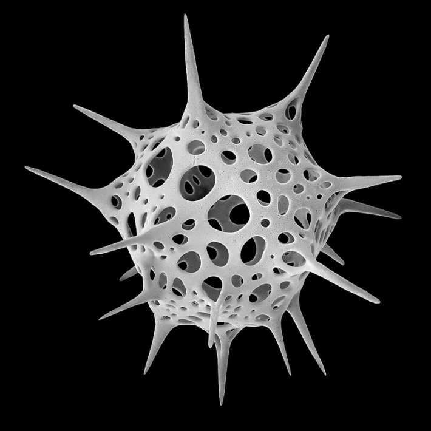
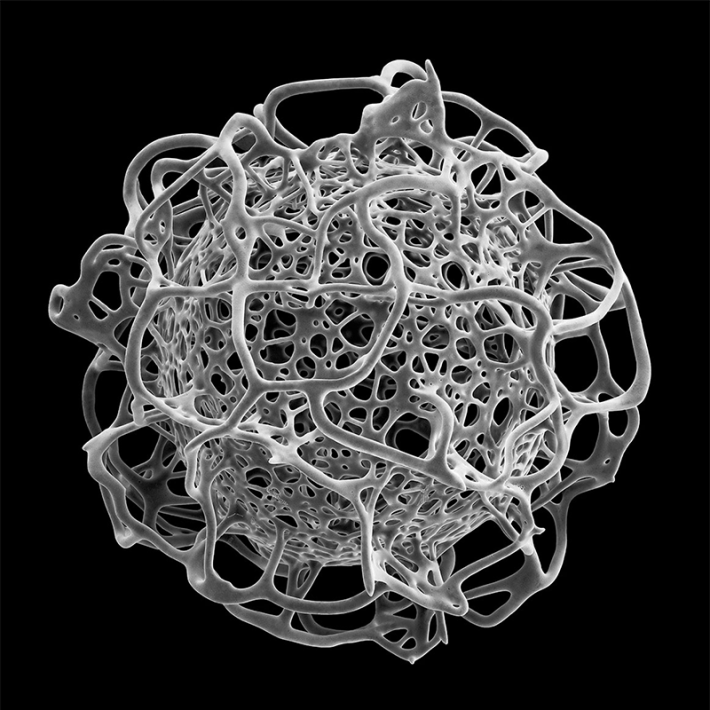
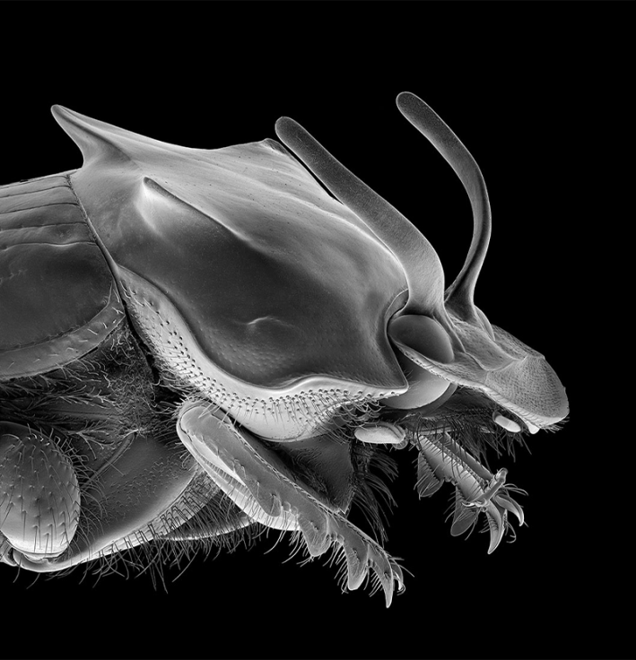

One of the earliest influences for artist, writer, and filmmaker Michael Benson, he says, was the sci-fi epic 2001: A Space Odyssey. Beyond stirring childhood wonder, he says the movie impressed upon his 6-year-old brain that grand subjects such as our role in the universe and our seemingly inexorable need to explore are worthy topics for art, not “just” science or philosophy. Later, it sparked questions for Benson about humanity’s place in space and time, themes he has been exploring through his work for the last quarter century.
“My game for quite a while now has been to use scientific research methodologies and technologies to investigate the phenomenal world, not as a scientist, but as an artist and an image maker,” says Benson. His latest book, Nanocosmos, zooms in on minuscule specimens including single-celled organisms like radiolarians and diatoms, as well as insects, microscopic flowers, and snowflakes to highlight the intricacies of the natural world at the microscopic level. In a nod to our planet’s place in a much larger cosmic world, he also includes micrographs of lunar samples gathered during the Apollo program. The book features 300 highly detailed imagesconstructed from scanning electron microscope scans made over the course of six years at the Canadian Museum of Nature. Nanocosmos is both a journey into infinitesimal landscapes on Earth and a meditation on how humans visually explore and represent the physical world.
If you massage the bridge of your nose, you are touching a piece of the solar system.
In earlier projects, Benson focused on the universe that surrounds us through exploration of the solar system and deep space phenomena before pointing the lens back at Earth to examine the complex microscopic worlds at our fingertips. He staged a series of large-scale shows of planetary landscape photography around the world and has also produced films, and authored books, including Space Odyssey: Stanley Kubrick, Arthur C. Clarke, and the Making of a Masterpiece. With director Terrence Malick, Benson worked on visual effects for the film Tree of Life, crafting sequences which drew in part from his first two books, Beyond (2003) and Far Out (2009).
I recently spoke with Benson about the magic of photography, the intrigue of dung beetles, and humans’ attempts to visualize the universe.
What is the origin story of this book?
It's interesting that you use the term origin story, because one of the key sections of the book is an investigation of various single-celled aquatic organisms. There is a kind of synchronicity between the origin of life and the origin story of the book, which attempts to show some of the complexity and fascination of single-celled organisms, latter day evolutionary descendants of the origin story of life on Earth. And a larger origin story for me is my personal fascination with the specific quality of photography and micrography and how it allows the mechanically created image to be used as a tool for personally directed investigations of phenomenal reality.

Acrosphaera spinosa fasciculopora radiolarian, Equatorial Pacific;
Circa 1830 x. 120 microns wide, 0.12 of a millimeter.
How did you choose your subjects for the book?
Some of it was just spontaneous. I talk a little bit in the book about how ludicrous it was that I was blundering around in the tropics or on the Adriatic coast with my tweezers and my ethanol vials searching for what intrigued me, while my family was swimming at the beach. Or, in the Caribbean, just looking in rain forests for micro flowers and little things that might jump out. But on the other hand, I had a good idea that radiolarians and diatoms and dinoflagellates would be fascinating. There was plenty of evidence of that, reaching back to German marine biologist Ernst Haeckel in the 19th century.
A lot of your previous work looked at planets and other objects in the universe. How did you go from the vastness of space down to the very tiniest bits of life on our planet?
Well, this will sound pretentious probably but taken together I view all the books I’ve done for Abrams Books as a kind of gesamtkunstwerk, which is a German word that means comprehensive artwork that has many facets and synthesizes many genres. Like them, Nanocosmos is also an investigation of space, it’s just at another scale. Because, you know, if you massage the bridge of your nose, you are touching a piece of the solar system. And so all these fantastic subjects that I was privileged to look at are part of the solar system. It's part of this larger phenomenon of spacetime and this miracle of how we are here in the first place to observe it.

Clathrosphaera arachnoides radiolarian, equatorial Pacific;
Circa 700 x. 300 microns wide, 0.3 millimeter.
Did any of the specimens you imaged surprise you?
If I were to choose one subject that really blew my mind in a way that I didn't expect, it would be the dung beetles. They roll these gigantic spheres of dung, sometimes for more than a quarter mile, and bury them. They're so perfectly built to push something way bigger than themselves around. They look like the most extraordinary, powerful, living manifestations of the need to move weight around. Not only that, but they're so beautiful. The fact that these bulldozers can take off and fly is just a miracle. In general, insects are just so dazzling in the microscope.
Do you have a sense of why so many patterns and shapes tend to repeat themselves throughout nature and what that might say about the world around us?
I'm not sure I entirely agree, by which I mean, nothing else on Earth really looks like a radiolarian, with its polygonal silica shell, irregular polygons perforated by radiating spines. Nothing at a larger scale that I've ever seen looks anything like that. And the same really holds true for dinoflagellates and diatoms. They are very specific solutions to their own ecological niche. But there can be a very mathematical kind of geometrical sense of connection to larger principles when you look at them.

Onthophagus francoisgenieri dung beetle, Madang Baltabang, Madana, Papua New Guinea;
Circa 36.6 x. About 6 millimeters wide.
How does Nanocosmos build on past projects?
Nanocosmos is a continuation of looking at how we use images to understand the universe. I mean, there’s a symbiotic relationship between representation and understanding. Photography has always been alchemical in a certain way. It's a form of magic in which physical materials, like chemicals and photographic emulsions, can be used to record other physical materials and chemical reactions, by which I mean the larger physical world. As human beings, we’re a way in which the universe looks at itself. It’s not surprising that we’ve produced more powerful technologies enabling us to do that better, more deeply, with greater magnification. My other books cover such things from the solar system to the Big Bang into the history of human attempts to visualize the universe in graphic form. Nanocosmos links right up with those.
What was the process for making the images in your book?
With a lot of the interplanetary material, the pixel count of the raw images taken from the spacecraft wasn't that high. So they had to be tiled and composited to produce higher resolutions. When I finally had access to a scanning electron microscope, and I had practically unlimited resolutions available, I overshot the mark, and I did a lot of scanning. All of that resulted in a mountain of work later where I had to assemble final composite images. There are also a whole series of images where you see insects and plants together but they're not as natural as they may look in the sense that they were put in ethanol, then dried in something called a critical point dryer, which is a way of exchanging liquids for gas at high pressure with minimal damage to the subject. If I didn't smash the subject, then there was another delicate operation, which is mounting the subject on a little sample stub, and putting it in a sputter coater, which coats the samples, and they end up looking like jewelry because they're coated in platinum or gold. Then you put it in the vacuum chamber of the microscope, and there's a whole new set of things to learn and issues when it comes to imaging the subject. It's a labor of love.
What do you hope people will take away from this work?
I don't want to prescribe anything. But I'll be satisfied if people come away with a sense of amazement at the complexity of the forms that nature can produce at these extraordinarily tiny scales. And if that helps foster an appreciation of this biosphere that produced us, which we are not treating with the respect that it deserves, I will be satisfied. Perhaps it can contribute to a sense that we really should do a better job at fostering our environment. 
Lead image: View from tip down leading wing of Erythemis simplicicollis dragonfly, Gatineau Park, Quebec. Circa 106 x. Wing is about 3 millimeters wide.
Källförteckning
- Originalartikel: https://nautil.us/in-awe-of-tiny-things-1242697/